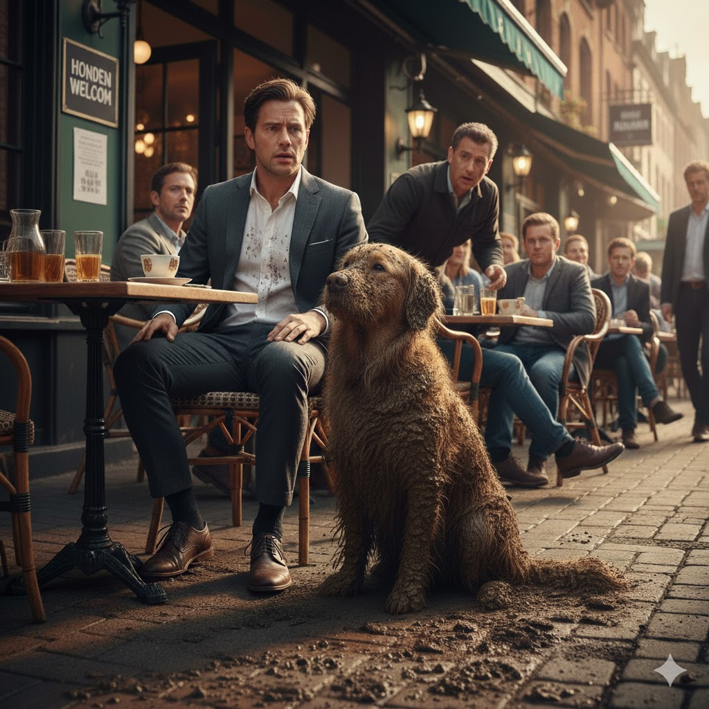

Hygiëne en voedselveiligheid
Sommige cafés kiezen ervoor om geen honden toe te laten vanwege hygiëne. Vooral in kleinere zaken of plekken waar eten direct wordt bereid en geserveerd, zijn er strengere regels. Dit is vaak een keuze om aan voedselveiligheidsvoorschriften te voldoen en klachten te voorkomen.
Allergieën en gezondheid van gasten
Niet iedere gast voelt zich prettig bij honden in een horecazaak. Voor mensen met een allergie voor hondenhaar kan een bezoek zelfs gezondheidsproblemen veroorzaken. Horecaondernemers houden hier rekening mee, zeker in kleine ruimtes waar contact onvermijdelijk is.
Drukte en beperkte ruimte
In cafés met weinig zitplaatsen of smalle doorgangen kan het praktisch lastig zijn om honden toe te laten. Tijdens piekuren kan een hond in de weg liggen of zorgen voor onveilige situaties. Sommige eigenaren kiezen er daarom voor om de toegang te beperken of enkel terrassen open te stellen voor honden.
Begrip voor beide kanten
Als hondeneigenaar kan het frustrerend zijn om geweigerd te worden, maar het helpt om te weten dat er vaak zorgvuldige afwegingen achter zitten. Gelukkig zijn er in Alkmaar genoeg alternatieven waar honden wél welkom zijn, vaak met extra voorzieningen of een ruim terras.